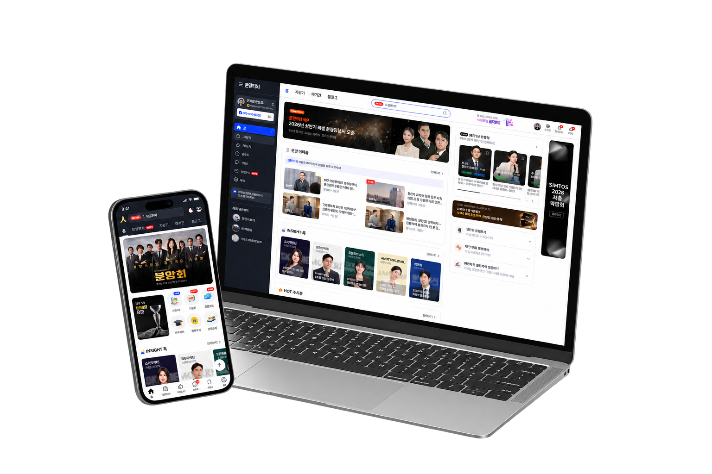
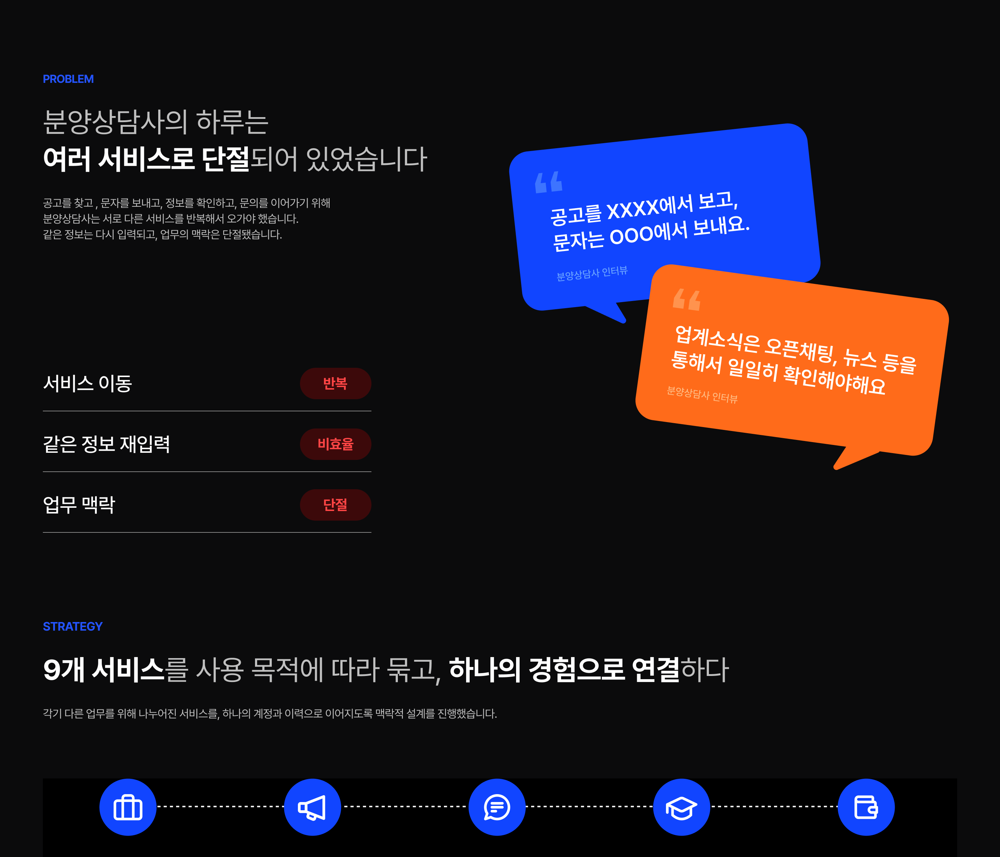
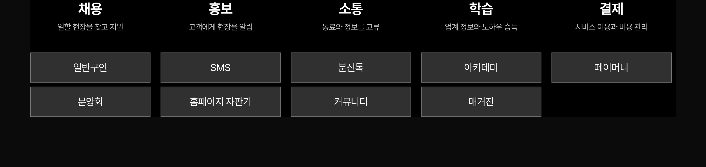
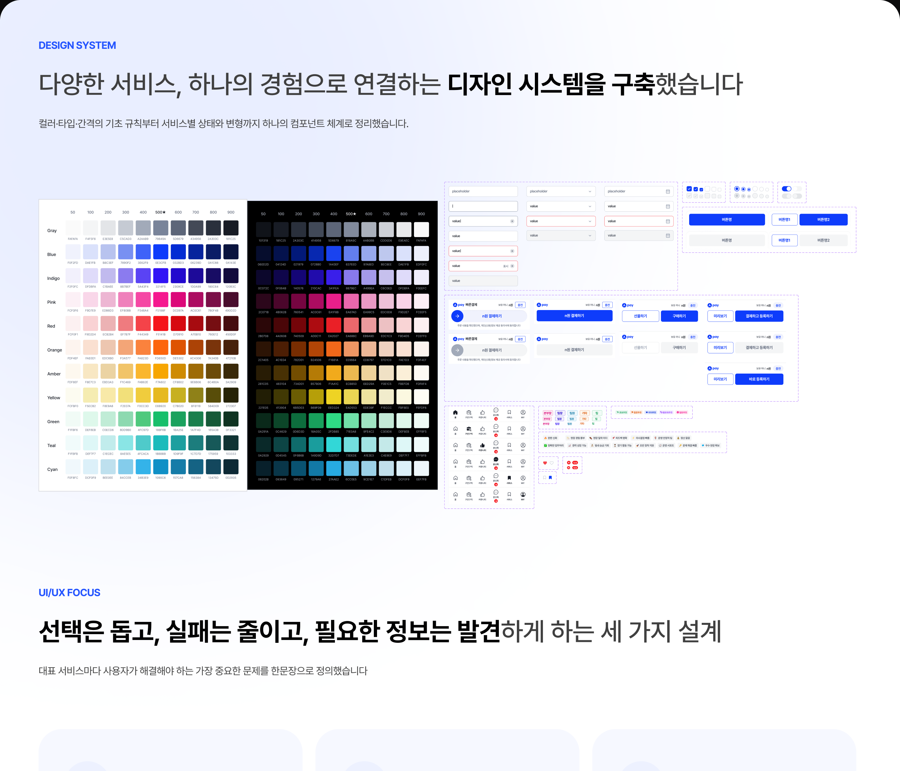
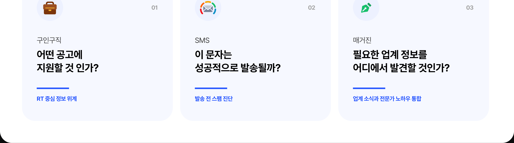
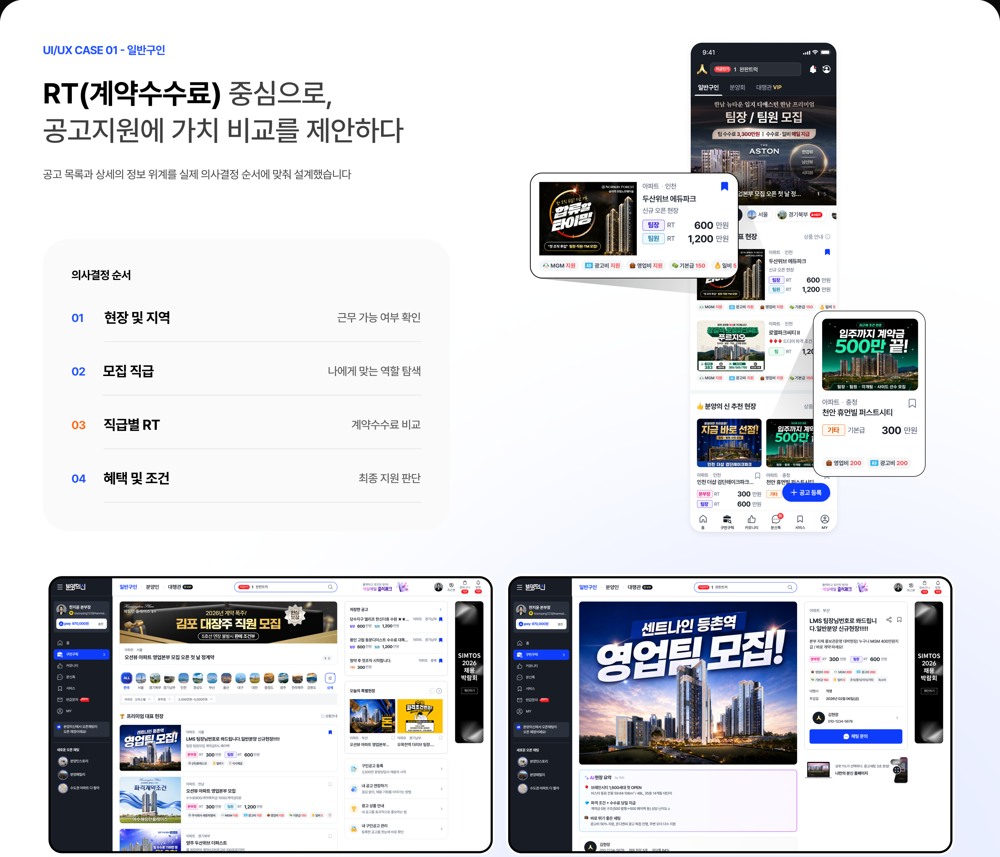
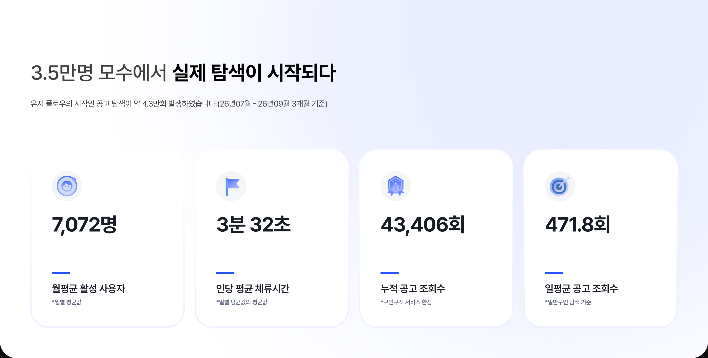
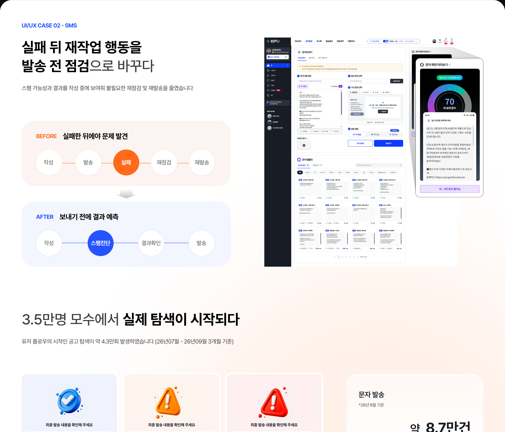
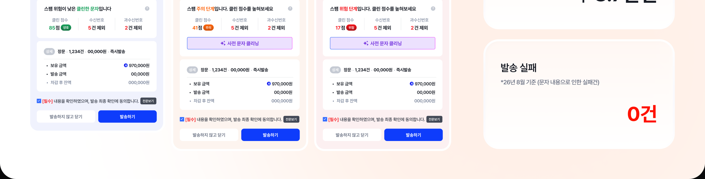
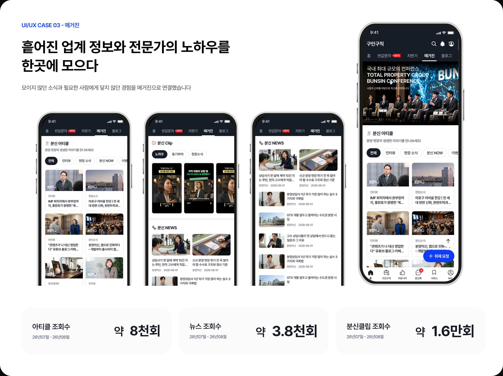

분양의신
2025.09 – 2026.06
Overview
분양상담사의 복잡한 업무를,
하나의 흐름으로.
구인구직 · SMS · 매거진을 중심으로 9개 서비스를 연결한 분양상담사 올인원 플랫폼입니다. 모바일과 PC의 정보구조, 사용자 흐름과 디자인 시스템을 설계했습니다.
- PERIOD
- 2025.09 – 2026.06
- ROLE
- UI/UX 디자인 총괄
- TEAM
- 플랫폼신사업 1팀 7명 + TF팀 6명
- TOOLS
- Figma








